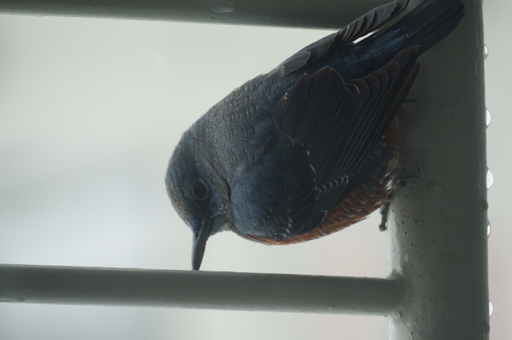
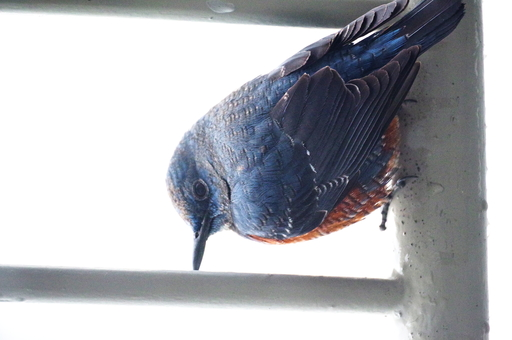
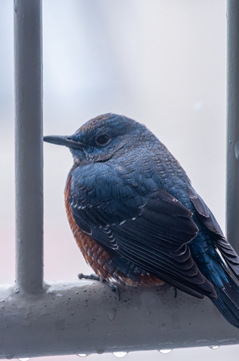

先月の 27 日は雪が降りしきっていた。ふとベランダを見るとイソヒヨドリが雪を避けているのか欄干のたもとに佇んでいた。

上の写真がガラス越しに撮った JPEG の撮って出し画像だ。汚れたガラス越しに撮ったためか発色も解像もよくない。それ以前に背景が明るく逆光になっているため、イソヒヨドリの姿が暗い。

なので見たときの印象に近くなるように 2 枚目のようにカメラ内 RAW 現像で現像してみた。
しかしコントラストが強すぎるのと、暗部ノイズが出まくりんぐで全体的になんだか美しくない。それだけでなくなんだか羽の質感もよろしくない。なんとかしたいが自分の現像能力ではこれが限界だったため、しばらく放置していた。
しばらく経ったある日、とある写真系 Blog に DxO の PureRAW 2 というソフトが紹介されていて、細部の質感を残したままデノイズ処理を行うという機能が紹介されていた。
しばらく PureRAW 2 のことは忘れていたのだけれど、今日とある YouTuber が Denoize AI というソフトを紹介していて試した結果、その処理結果が気に入らず、ふと PureRAW 2 のことが頭によぎったのだった。

そんなわけで DxO PureRAW 2 で RAW データのデノイズ等を行い、 PureRAW 2 の出力結果である dng ファイルを Adobe Lightroom Adnroid で現像したのが上の 3 枚目の画像だ。
もともとコントラストが強い画像だったが暗部を持ち上げても PureRAW の効果なのかノイズも目立たず、かといって羽の質感も大きくは損なわずバランスのとれた画像に仕上がったように思う。
下の画像のスライダーを動かして違いを見比べてみて欲しい。左がカメラ内 RAW 現像で右が PureRAW だ。
PureRAW 側は Lightroom で垂直だしをした関係上画像の大きさが若干変わっているが、全体的なイソヒヨドリの体の質感は良くなってると思うのだけどどうか。